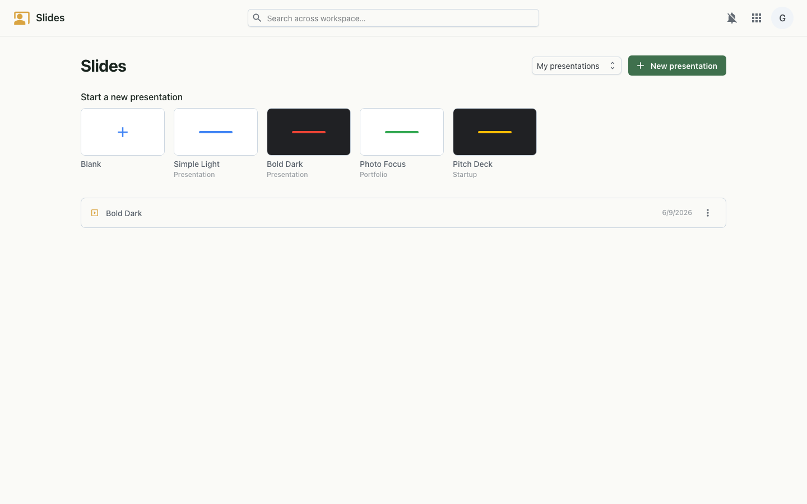
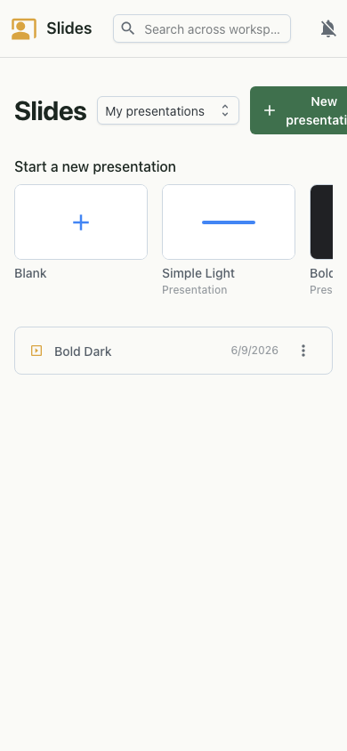

Build and present slide decks — design slides with text, shapes, images and animations, then present full-screen with speaker notes.
Slides is a presentation editor and deck library in one. Design each slide on a free-form canvas — drag and resize text boxes, shapes and images — add transitions and per-element animations, write speaker notes, then run the deck in a full presenter view. Decks are collaborative, so a team can build the same presentation together in real time.


Each deck is a list of slides, and each slide is a set of positioned elements — text, shapes and images — with its own background, notes, transition and animation order. The editor renders that model on a scalable canvas and replays it in the presenter view. Edits broadcast to other collaborators over a live websocket, and sharing is governed by the same workspace sign-on, including people in other organisations.